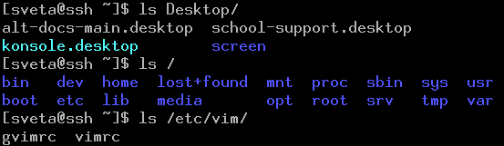
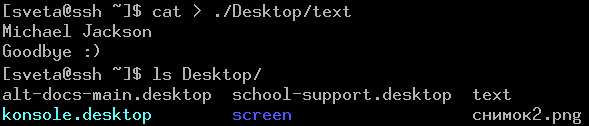
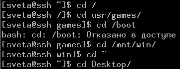

Очень частой задачей в командной строке Linux является просмотр содержимого того или иного каталога. Для этого используется команда ls. Однако, используя данную команду без аргументов, можно увидеть содержимое только текущего каталога. Обычно в Linux по-умолчанию текущим каталогом является домашний каталог пользователя. Как быть, если требуется узнать содержимое других каталогов? Для этого в качестве аргумента команде ls следует передать адрес каталога.
Вспомним, что адресация бывает абсолютной и относительной. В случае абсолютной адресации путь к каталогу (или файлу) указывается, начиная с корневого каталогаи далее вглубь по дереву папок до требуемого каталога. Например, все следующие записи являются абсолютными адресами:
/home/sv/Desktop
/boot
/etc/vim
Первый знак / (слеш) - это обозначение корневого каталога.
При относительной адресации путь к каталогу указывается, начиная с текущего каталога (другими словами, относительно текущего каталога). При этом используются следующие обозначения:
. или ничего - текущий каталог;
.. - каталог на уровень выше (родительский по отношению к текущему).
При относительной адресации нужно хорошо представлять картину взаимного расположения директорий.
Примеры относительных адресов:
./Documents/images/
Documents/images/
../test – в родительском каталоге по отношению к текущему есть папка test:

Уместность использования относительного или абсолютного адреса зависит от ситуации. Так, например, если требуется просмотреть корневой каталог, то проще написать / (т. е. абсолютный адрес); если необходимо узнать содержимое каталога, вложенного в текущий, то можно просто написать его название (относительная адресация).
Можно выделить еще один способ адресации — это адресация относительно домашнего каталога пользователя. Обозначается домашний каталог знаком тильды (~). Например, из любого каталога адрес ~/Documents, заставит обратиться в папку Documents, находящуюся в домашнем каталоге.
Пример просмотра различных каталогов с помощью команды ls:

Обратите внимание, на команду ls /. Она выдает список вложенных директорий корневого каталога. Для операционных систем на базе ядра Linux этот список относительно стандартен. Например,
root – это домашний каталог суперпользователя;
bin – содержит программы, необходимые во время старта системы, а также часто используемые команды;
boot – содержит файлы для загрузки и ядро операционной системы.
Использование адреса с командой ls – лишь частный случай. Например, можно направить вывод в файл в другой каталог, отличный от текущего:

Когда мы используем команду ls, то можем увидеть содержимое почти любого каталога, но не переходим в него (текущий каталог не меняется). Мы как бы смотрим из одного помещения в другое, оставаясь по-прежнему в первом. Однако бывают случаи, когда требуется изменить текущий каталог.
Для перемещения по дереву каталогов в командной оболочке Linux используется команда cd. В качестве аргумента передается адрес каталога, куда нужно перейти. Примеры:

Обратите внимание на изменения в приглашении командной оболочки. Теперь вместо знака тильды, который обозначает домашний каталог, появились названия каталогов куда был осуществлен переход.
Если требуется выполнить множество различных операций в какой либо папке, то лучше перейти в нее, чем пытаться манипулировать объектами из других каталогов. Это позволит не писать длинные адреса при обращении к объектам (каталогам и файлам).
Следует помнить одну полезную особенность — это автозавершение при нажатии клавиши Tab. Для адресов оно работает также как и при записи команд. Например, желая перейти из домашнего каталога на рабочий стол, достаточно набрать cd De, нажать Tab, затем Enter.
вопросы
- Как обозначается корневой каталог?
- Чем отличается относительная адресация от абсолютной? Приведите примеры адресов обоих типов.
- Что означают следующие записи: ls /, cd ../../, cd ~?
- Какую адресацию уместнее использовать в следующих случаях: переход из Desktop в каталог, вложенный в корневой; просмотр содержимого каталога, вложенного в текущий?
- Для чего предназначена команда cd?
- Как в командной оболочке Linux можно определить, какой каталог является текущим?
практическая работа
- Просмотрите содержимое нескольких каталогов, вложенных в корневой.
- Директория /home содержит домашние папки пользователей системы. Узнайте какие пользователи зарегистрированы в вашей операционной системе.
- Измените текущий каталог, а затем снова вернитесь в домашний.